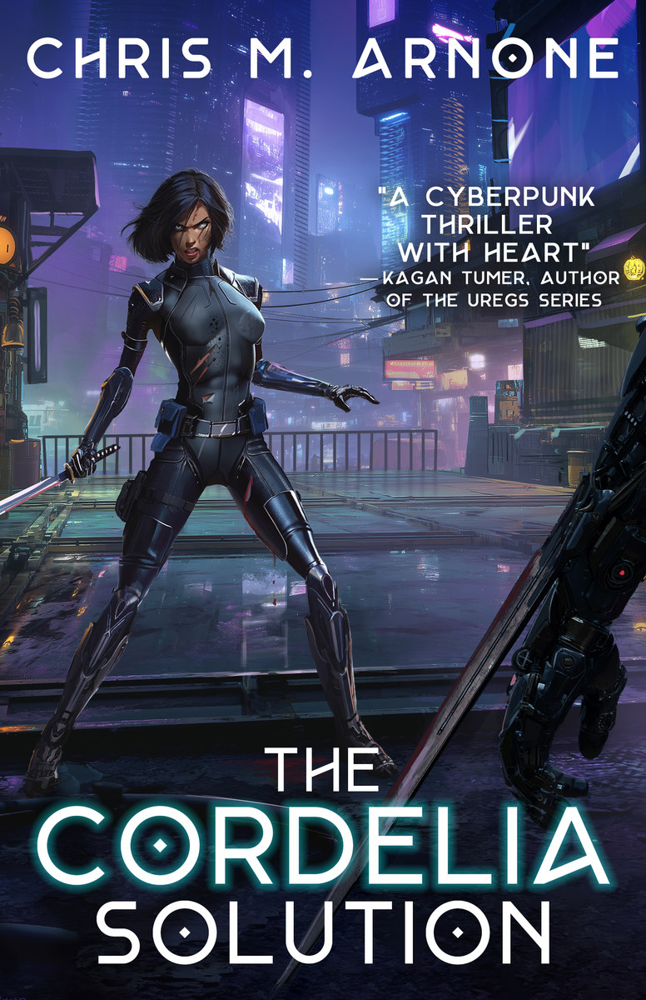

Our Catalog / Jayu City Chronicles Book 3: The Cordelia Solution

Jayu City Chronicles Book 3: The Cordelia Solution
"Fast-paced, action-packed, and full of twists and turns, The Cordelia Solution, the latest in Arnone's Jayu City Chronicles, does not disappoint." —J.H. Fleming, author of the Music the Gathering series
"Arnone's third entry in his cyberpunk series, The Jayu City Chronicles, continues to show us a future where technology isn't just used by evil corporations for nefarious purposes, but by innovative characters for anything from infiltrating and sneaking to expressing their sexual identity through body modification. Mixing high technology with the thrills of a heist story and the intrigue of a spy novel, the Cordelia Solution is a great adventure that expertly carries the intrigues and conspiracy through from the first two books. But be ready for a cliff-hanger that will have you waiting impatiently for Book Four!" - Greg Leunig, author of Colossus, Cold Wind Blowing, and Neon Citadel.
"Arnone once again deftly channels the sleek and sexy cyberpunk vibes of standards like Ghost in the Shell, Aeon Flux, and the Deus Ex game franchise in The Cordelia Solution, the third installment in his Jayu City Chronicles. It is a slick, high-intensity, corporate espionage thriller, featuring a diverse and inclusive cast, that leaves you on the edge of your seat begging for more." – A.G. Rodriguez, author of Space Brooms!
“First the NDA, then the kiss. Arnone’s Jayu City Chronicles are a ‘must read’ for the cyberpunk crowd. This third installment, The Cordelia Solution, is no exception.” – Phillip Drayer Duncan, author of The Blade Mage
“The Cordelia Solution plunges readers back into the intrigue of Jayu City, where danger, deception, and unexpected alliances keep the stakes sky-high. Elise Corto-Intel’s latest mission blends corporate espionage, high-tech thrills, and complex personal entanglements that keep readers turning the pages. Perfect for fans of nuanced characters and intricately built cyberpunk worlds where every choice could be the last.” – Michael Solis, Author of Deficient
"Deep undercover and in deep trouble! When her personal and professional missions collide, Elise must reassess her loyalties and confront her biggest fears to survive. But at what cost? The third installment of the Jayu City Chronicles raises the stakes and delivers a Cyberpunk thriller with heart." - Kagan Tumer, author of The Uregs series
"The Cordelia Solution is jam-packed with fascinating tech and heart-pounding action, but where it really shines is in the relationships. Arnone has a knack for building honest, genuine connections between characters - both positive and negative - that make the reader care about the outcome on a personal level. This is cyberpunk with heart." - Christine Hanolsy, Nebula Award-nominated author of “Katya Vasilievna and the Second Drowning of Baba Rechka”
Elise Corto-Intel is a thief. Was a thief. Now, it seems like so much more is being asked of her. Despite her best efforts, a rogue operative is still on the loose and still trying to upset the careful balance of power in Jayu City. To sniff out the threat, Elise has to go deep undercover, accompanied only by her apprentice and her illegal AI.
Now, Elise is working for Gloria, the daughter of the CEO of a rival company. Cut off from her friends, family, and most of her support network, she's never felt more alone. Can Elise stop the threat before it destroys the city? Can she keep her cover and her life intact? And can she protect her own heart as Gloria’s initial distrust grows into burgeoning love?